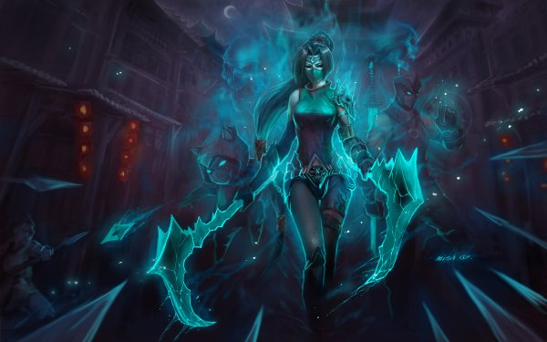
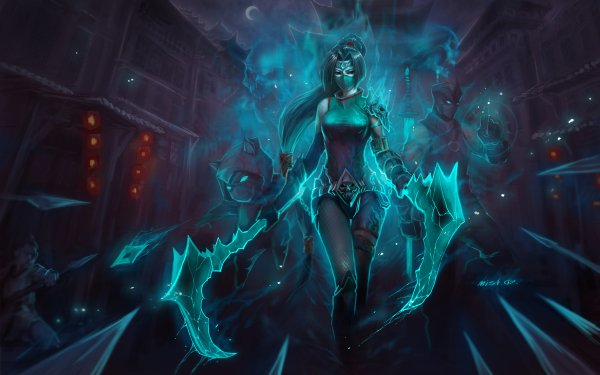
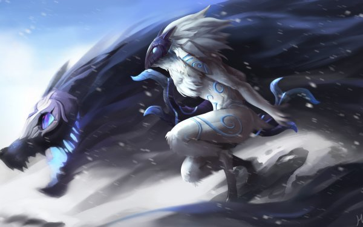
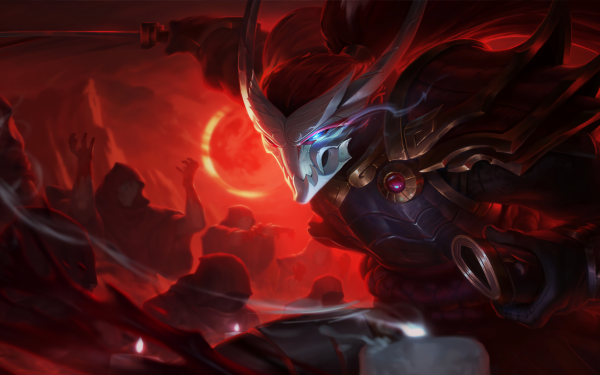
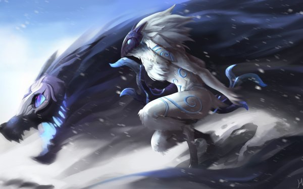
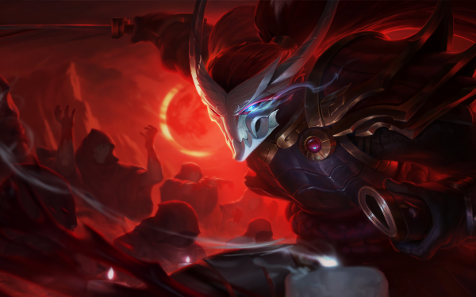

O que é League of Legends?
Se trata de um jogo ambientado em um mundo de fantasias onde batalhas ocorrem, de maneira geral esse é o League of Legends "LOL", sendo disponível para plataforma PC.
Para completar o jogo é exclusivamente online e GRÁTIS. A mistura de batalhas em um ambiente mágico faz com que elas se tornem sangrentas e com muita magia (idade recomendada 12+), envolvendo desde criaturas abissais e gigantes, até raposas com 9 caudas e Yordles que disparam dardos envenenados.
Em League of Legends, os jogadores assumem o papel de "invocadores", que controlam campeões com habilidades únicas, que formam um time e lutam contra o time adversário de outros invocadores ou controlados pelo computador. No modo mais popular do jogo, o objetivo de cada time é destruir o Nexus da equipe adversária, uma construção localizada na base e protegida por outras estruturas. Cada partida de League of Legends é distinta, pois os campeões sempre começam fracos e progridem através da acumulação de ouro e da experiência ao longo do jogo.
LOL no Mercado de Trabalho
Encontramos hoje milhares de pessoas que ganham dinheiro jogando o lolzinho, pró players são um dos exemplos, disputando campeonatos valendo milhões de dólares.
Um exemplo de time é a EVX "El-Vortex"

 

 


